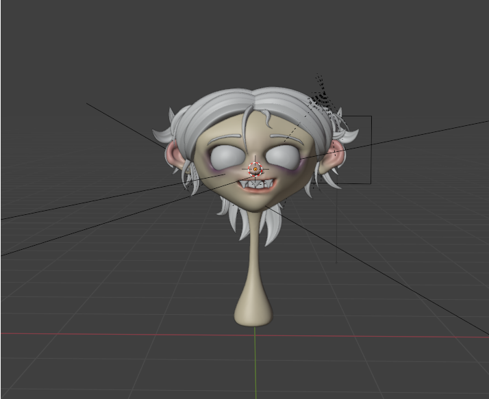
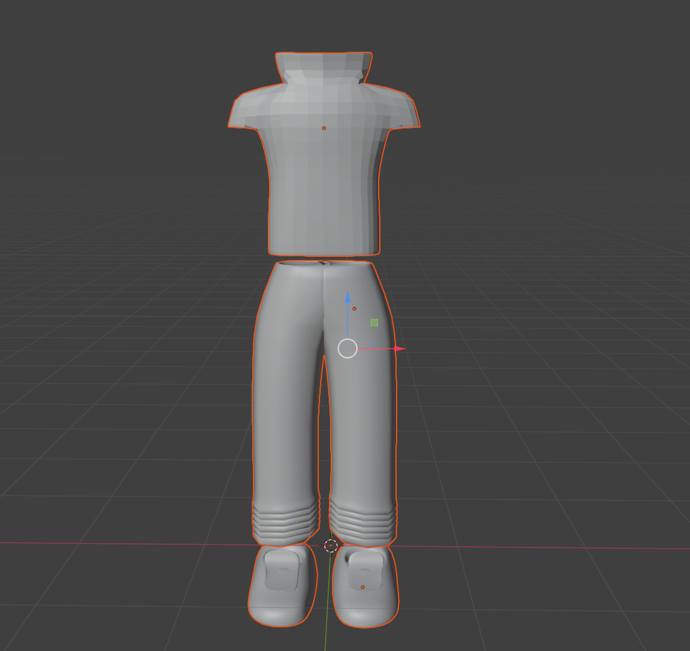
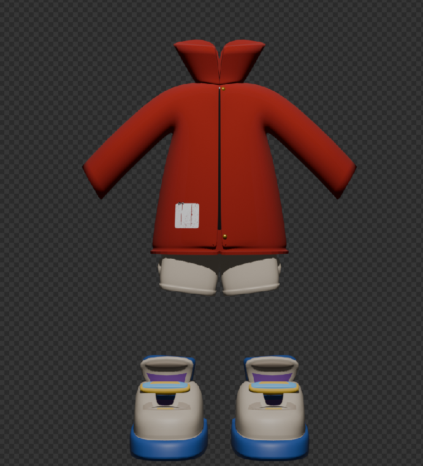
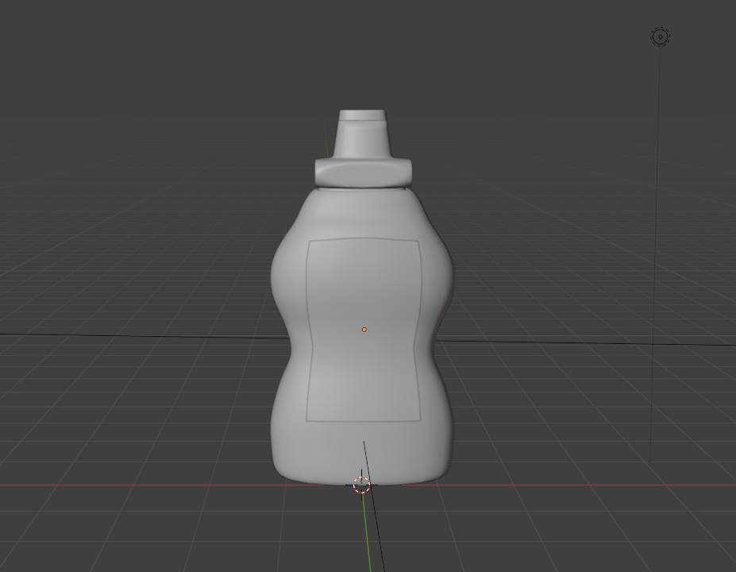
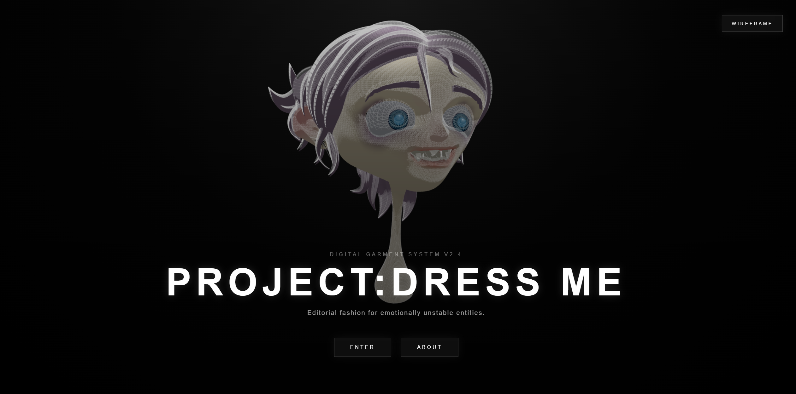
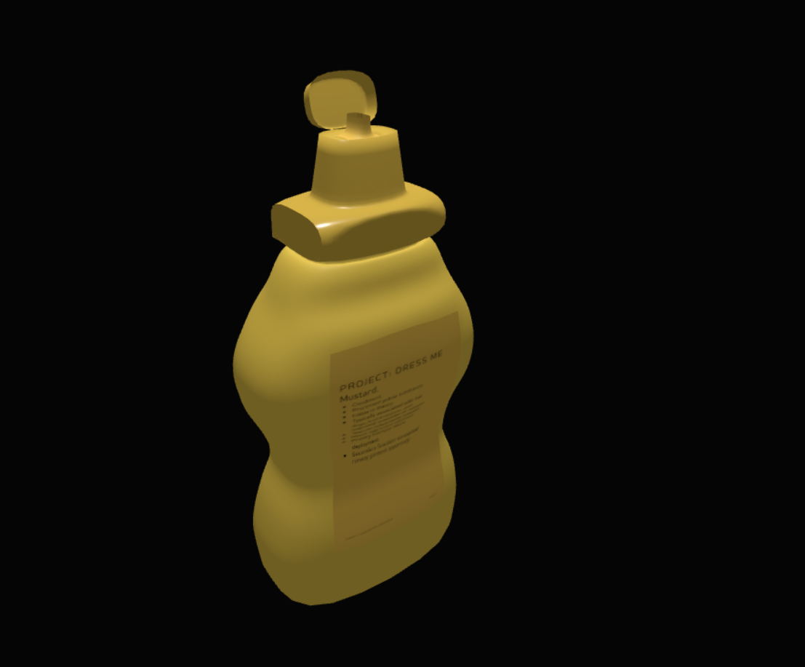
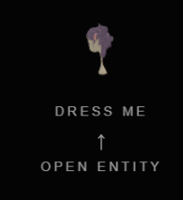
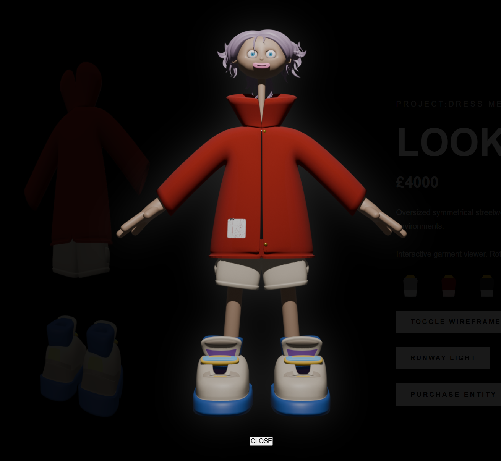
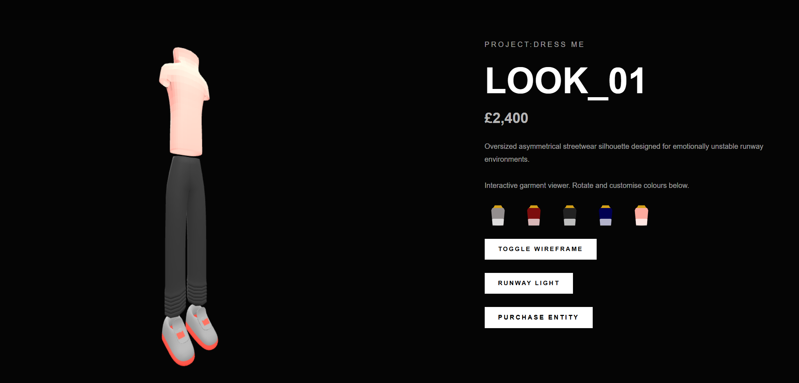
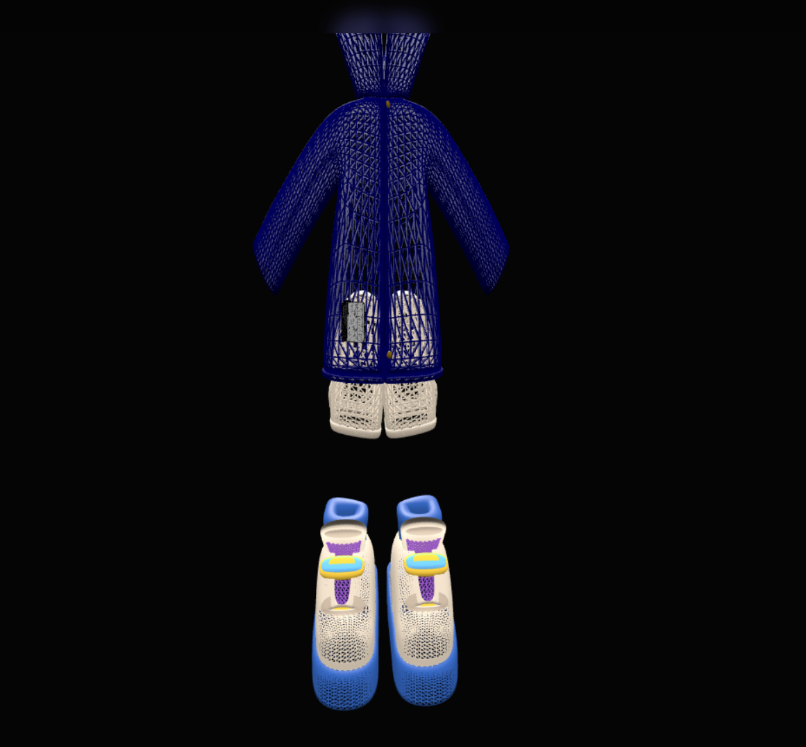

PROJECT OVERVIEW
PROJECT:DRESS ME is an interactive 3D fashion web experience developed using Blender, Three.js, HTML, CSS, JavaScript, and Bootstrap components. The project combines experimental digital fashion aesthetics with interactive web design, featuring a rotating mascot character, multiple stylised 3D fashion looks, and a humorous animated mustard bottle interaction. The website was designed to create an immersive and visually distinctive experience inspired by futuristic fashion editorials and experimental digital interfaces. Interactive features such as wireframe modes, lighting systems, animations, camera controls, and model customisation were implemented to encourage user interaction throughout the site.
3D MODELS
I made four original 3D models for this project using Blender. These included the mascot head model featured throughout the homepage, two fashion looks displayed within the wardrobe system, and the animated mustard bottle used as an interactive object. I sculpted and developed the mascot head model myself, focusing on creating an exaggerated and stylised appearance that matched the experimental/editorial aesthetic of the website. While modelling the head, I used tools such as the mirror modifier to maintain facial symmetry and improve workflow efficiency during the sculpting and modelling process. I also paid close attention to keeping the topology as clean as possible, especially around curved facial areas and hair sections, to ensure the model remained usable when imported into Three.js. For the clothing models, I experimented with different shapes, silhouettes, and exaggerated proportions to create a more futuristic and editorial appearance. I used a combination of mesh modelling techniques, scaling, extrusion, and topology adjustments to build the garments while maintaining a low enough polygon count for real-time web rendering. I wanted the clothing to feel dramatic and slightly unstable visually, almost like digital runway concepts rather than realistic fashion items. The mustard bottle model was created as a smaller experimental object within the project and became one of the main interactive elements of the website. I separated the bottle cap into its own object and animated it directly in Blender using keyframes before exporting the animation as a GLB file. This animation was later integrated into the Three.js scene and connected to interactive JavaScript controls and alongside lighting effects. Once completed, all models were exported and integrated into the website using Three.js and WebGL rendering. I adjusted materials, lighting, wireframe modes, animations, and camera positioning individually for each scene to maintain a consistent visual identity across the project.




INTERACTIVE FEATURES
I implemented a range of interactive features throughout the website using JavaScript and Three.js in order to make the experience feel more immersive and responsive. I wanted the project to behave more like an interactive digital fashion archive rather than a static webpage, so most pages contain interactive elements that react to user input. Users are able to rotate and inspect the 3D models directly within the browser using OrbitControls. I also added wireframe toggle modes to allow users to view the underlying structure and topology of the models in real time. Lighting systems were implemented using ambient and spotlight lighting, including additional runway-style lighting controls to create a more editorial visual atmosphere. I added colour customisation buttons to the fashion look pages- shaped like little mustard bottles a little nod to the mustard bottle I added, allowing users to experiment with different visual styles directly within the scene. I also implemented camera movement systems and profile viewing controls to create more dynamic ways of viewing the models. One of the main interactive elements within the project is the animated mustard bottle object. This feature combines Blender animation, JavaScript interaction, lighting and sound integration triggered by user interaction. I created this feature as a more experimental and humorous interaction to contrast with the fashion-focused sections of the project and give the website more personality. Additional interactive features include animated pop-up systems, responsive navigation elements, hovering UI effects, and hidden clickable mascot interactions across different pages. These smaller details were designed to encourage exploration and make the interface feel more alive and reactive. I also implemented a hidden interactive pop-up system connected to the mascot character displayed within the navigation area of the fashion look pages. When users interact with the rotating mascot element, a pop-up window appears containing an alternative dressed version of the character. I designed this feature to encourage exploration and reward user interaction with hidden interface elements rather than relying only on obvious navigation systems. To improve usability, I later added animated visual prompts and interaction hints to make the feature more discoverable while still maintaining the experimental aesthetic of the project. The pop-up system was created using HTML, CSS, and JavaScript event handling, alongside layered interface styling and animated UI transitions.






DEVELOPMENT PROCESS
The development process for PROJECT:DRESS ME involved combining Blender workflows with front-end web development and Three.js integration. I began by creating and refining the 3D assets in Blender before exporting them as GLB files for use within the browser. During this process, I had to continuously optimise topology, scale, object positioning, and mesh structure to ensure the models would render correctly and efficiently in real-time WebGL scenes. Once the assets were completed, I imported them into the website using Three.js and structured each scene individually using JavaScript modules. I implemented lighting systems, OrbitControls, animation systems, camera positioning, wireframe rendering, and responsive layouts across different pages. A large part of the development process involved experimenting with scene composition and interaction design to create a more stylised and immersive visual experience. Throughout development, I encountered multiple technical issues relating to model imports, animation playback, layering, positioning, interaction conflicts, and JavaScript debugging. I used browser developer tools, console debugging, and iterative testing to solve these issues and improve the functionality of the website. One example of this involved integrating Blender animation data into Three.js using AnimationMixer and GLTF animation clips for the animated mustard bottle interaction. I also experimented with interface design throughout development, creating custom layouts and interactive UI systems rather than relying entirely on default frameworks. Although Bootstrap components were integrated into the About page and interface structure, I primarily used custom CSS styling to maintain a stronger visual identity across the project. The project evolved significantly during development, with additional features such as animated pop-up systems, interactive mascot elements, lighting controls, camera systems, wireframe modes, and audio interactions being added progressively as the website became more refined.
TESTING
I conducted user testing with several users throughout the development process in order to evaluate the usability, interactivity, and overall experience of the website. The feedback I received helped shape a number of final design decisions and interactive improvements across the project. One user suggested that the landing page would feel more immersive if users were able to directly drag and rotate the floating mascot head model rather than only watching it rotate automatically. In response to this feedback, I implemented mouse drag rotation controls using JavaScript to allow users to physically interact with the 3D model while still maintaining the automatic floating and rotation animation. The same user described the overall website as “pretty sick”, which suggested that the visual style and experimental atmosphere of the project were successfully communicated to users. During testing sessions with my lecturer, it was suggested that some interaction prompts were not visually obvious enough. In particular, the downward navigation arrow used within the wardrobe page interface appeared too subtle. To improve usability and guide user interaction more clearly, I increased the size and visibility of the arrow and adjusted the surrounding interface spacing. Another user suggested animating the mustard bottle interaction further by making the bottle appear to squirt mustard during activation. I experimented with this idea by implementing an animated mustard stream effect alongside the bottle cap animation, sound effect, and lighting response. However, after further feedback from my lecturer, I decided to remove the visible mustard stream effect because it visually disrupted the cleaner aesthetic of the page. I kept the bottle opening animation itself, as it still added personality and interaction without overwhelming the overall visual design. Additional usability feedback identified navigation issues within the “MUSTARD.exe” page. One user noted that the page lacked a clear method of returning to the main interface, so I implemented a dedicated back button to improve navigation consistency throughout the project. Further testing also revealed that some hidden interactive elements were too difficult for users to discover naturally. In particular, the hidden mascot pop-up interaction was mistaken for an accidental easter egg rather than an intended feature. To improve discoverability while still maintaining the playful experimental nature of the website, I added clearer interaction prompts and implemented the “OPEN ENTITY” button to guide users towards the feature more effectively. Overall, the testing process helped improve both the usability and presentation of the project. Most of the feedback focused on interaction clarity, navigation, and visual communication, which allowed me to refine the balance between experimentation and accessibility throughout the final website
ORIGINALITY STATEMENT
All 3D models, website layouts, interactions, and visual designs included within PROJECT:DRESS ME were created and developed by me using Blender, Three.js, HTML, CSS, JavaScript, and Bootstrap components. The project was inspired by experimental fashion editorials such as 'gentle monster', 'Off-white' and 'Fear of God', interactive digital archives, and stylised 3D web experiences, however the final concept, branding, interface design, model development, animations, and interaction systems were independently designed and implemented as part of this assignment. During development, I used online documentation, tutorials, and technical references to assist with debugging and understanding specific workflows related to Three.js, Blender exports, JavaScript interactions, and responsive web development. AI tools were occasionally used as a supplementary support resource for troubleshooting, debugging assistance, and refining written content within the About page documentation. However, the core design decisions, modelling work, coding implementation, interaction systems, animations, and overall creative direction of the project were created and developed by me. No AI tools were used to generate the 3D models, website structure, or the main interactive systems contained within the project.